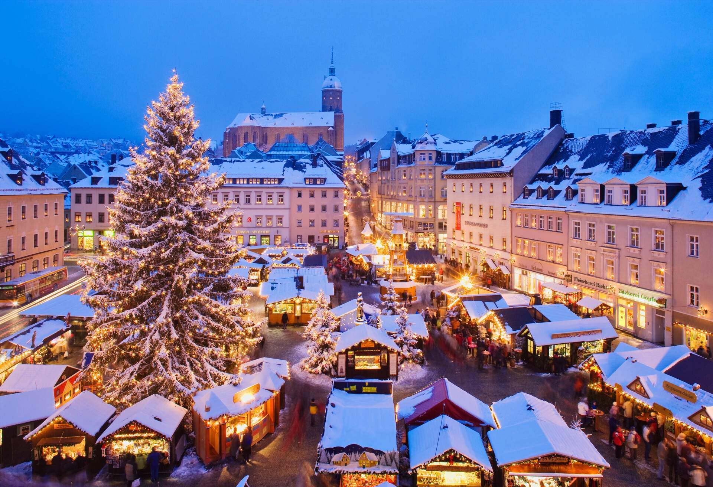

Weihnachten ist ein wichtiges Fest in Deutschland. Es wird jedes Jahr am 25. Dezember gefeiert. Die Vorbereitungen beginnen jedoch schon vier Wochen vorher, in der Adventszeit. In dieser Zeit haben viele Familien einen Adventskranz mit vier Kerzen. Jeden Sonntag wird eine Kerze angezündet. Das bringt Licht in die dunkle Jahreszeit und steigert die Vorfreude auf Weihnachten. Kinder freuen sich besonders auf den 6. Dezember, den Nikolaustag. Am Abend davor stellen sie ihre geputzten Stiefel vor die Tür. Der Nikolaus füllt sie über Nacht mit Süßigkeiten und kleinen Geschenken, wenn die Kinder brav waren. Ein weiterer Brauch ist der Adventskalender. Vom 1. bis zum 24. Dezember öffnen Kinder jeden Tag ein Türchen und finden dahinter Schokolade oder kleine Überraschungen. In vielen Städten gibt es Weihnachtsmärkte. Dort kann man gebrannte Mandeln, Lebkuchen und heißen Glühwein kaufen. Kinder fahren gerne Karussell und basteln Weihnachtsschmuck. Am 24. Dezember, dem Heiligabend, schmücken Familien den Weihnachtsbaum mit Kugeln, Lichtern und Sternen. Abends gibt es die Bescherung, bei der Geschenke ausgetauscht werden. Typische Weihnachtslieder wie „O Tannenbaum“ werden gesungen. Das Weihnachtsessen variiert, aber viele Familien essen Gänsebraten mit Rotkohl und Klößen. Auch Kartoffelsalat mit Würstchen ist beliebt. Zum Nachtisch gibt es oft Stollen, ein traditionelles Weihnachtsgebäck mit Rosinen und Marzipan. Ein bekanntes deutsches Weihnachtslied ist „Kling, Glöckchen“. Es handelt von kleinen Glocken, die klingen und Freude bringen. Kinder singen es gerne in der Weihnachtszeit. Weihnachten ist eine Zeit der Freude, des Beisammenseins und der Besinnung. Familien kommen zusammen, feiern und genießen die gemeinsame Zeit.
